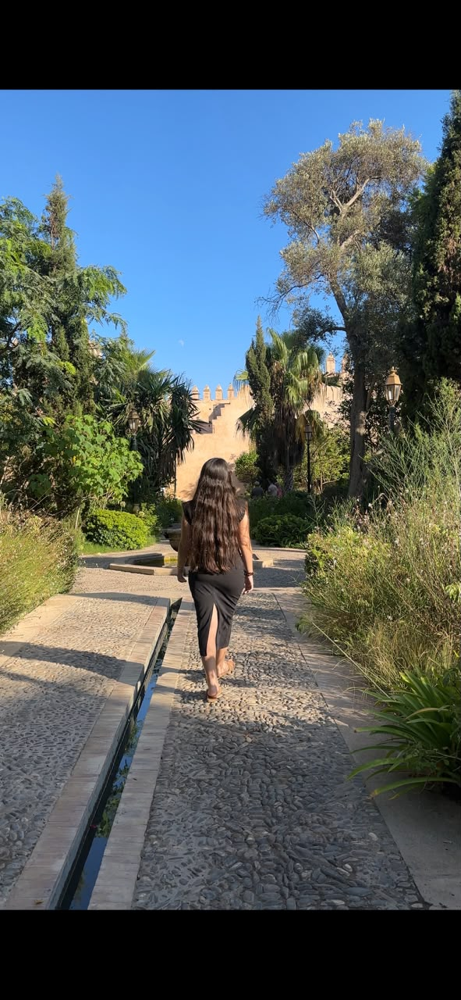
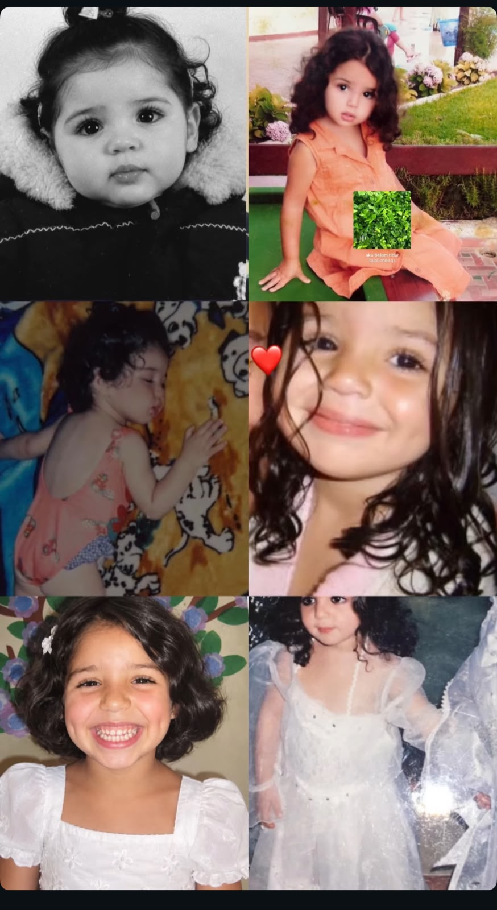

UN PETIT MOT, BEAUCOUP DE TENDRESSE ✷ FAIT POUR TOI
01 · QUELQUES MOTS POUR TOI
“
Il y a des personnes qui rendent les journées plus belles, juste en étant elles-mêmes.
✳
Ma chère Koki,
Joyeux anniversaire ! Je te souhaite beaucoup de bonheur, une excellente santé, de la réussite dans tout ce que tu entreprends et plein de beaux moments cette année.
Profite de ta journée, garde ton joli sourire et continue de briller !
Avec tendresse, Ayoub
02 · TOI, EN TROIS PETITS INSTANTS
Une galerie pour la star du jour.
Trois photos, et déjà mille raisons de sourire.
01 Cette belle énergie qui n’appartient qu’à toi

02 Koki, partout où la vie t’emmène

03 Mini Koki, maxi éclat ✨
04 · UN PETIT CIEL À ALLUMER
Une constellation rien que pour toi.
Touche les étoiles pour faire apparaître ton ciel de fête. Pas de score, pas de piège — juste un petit vœu à la fin.
✦ ♡ ✦
TOUCHE LES ÉTOILES POUR LES FAIRE BRILLER
0 / 7 étoiles allumées ○ ○ ○ ○ ○ ○ ○
✉
CAPSULE TEMPORELLE · SCELLÉE POUR KOKI
Choisis une étoile au-dessus pour ouvrir le premier petit mot ✨
Chaque étoile garde une pensée d’Ayoub.
✧
✧
TON VŒU DU CIEL
Que tes rêves trouvent toujours leur chemin vers toi, Koki. ✨
Avec tendresse, Ayoub
05 · LE RADAR SECRET DE KOKI
Alors, tu te connais par cœur ?
Quatre petits favoris à retrouver. Tout juste ? Un cadeau spécial t’attend…
♡
PETIT FAVORI 1 SUR 40 trouvée
Quel dessert fait fondre Koki ?
4 SUR 4 · LE RADAR DE KOKI A TOUT TROUVÉ !
♡✦♡
Avant le cadeau… un vœu pour toi.
Les bougies sont prêtes. Clique pour les allumer et lancer une chanson toute douce. 🕯️
🎂 ✧
UNE CHANSON POUR KOKI
« Perfect » d’Ed Sheeran
♪♫
La chanson reste ici avec Koki. Appuie sur lecture pour écouter « Perfect », puis reprends ta surprise quand tu veux. ✨
Quand tu es prête, une dernière surprise t’attend…
✿
🎀
BRAVO KOKI · 4 SUR 4 !
Tu as gagné un bracelet en or 💛
Le livreur passera demain pour te remettre ton cadeau. Prépare ton plus beau sourire !
Un cadeau choisi avec tendresse, Ayoub ✨
✳
LE 14 OCTOBRE 2004, UNE PETITE ÉTOILE EST ARRIVÉE
Et aujourd’hui, elle fête ses 22 ans.
22 années de sourires, de découvertes et de moments qui t’ont façonnée. Et tellement de jolies choses encore à venir.
14 · 10 · 2004
03 · LE CIEL DE TON PREMIER JOUR
Le ciel avait aussi sa petite histoire.
Le 14 octobre 2004, plusieurs astres étaient en Balance, comme le Soleil. La Lune était nouvelle. ✨
☾✦nouvelle lune
☼SOLEILBalance
☾LUNEBalance → Scorpion
☿MERCUREBalance
♀VÉNUSVierge
♂MARSBalance
♃JUPITERBalance
♄SATURNECancer
♅URANUSPoissons
♆NEPTUNEVerseau
♇PLUTONSagittaire
LE CIEL, VERSION COULISSES · 14.10.2004
Un clin d’œil cosmique pour ton arrivée.
Le jour de ta naissance, la Lune a glissé devant le Soleil. Une éclipse partielle, quelque part sur l’autre moitié du monde — comme si le ciel avait gardé son petit secret pour toi.
Illustration céleste animée selon le temps choisi — inspirée des données NASA.
FAIS DÉFILER LE TEMPS
Une journée, trois instants.
00:0006:0012:0018:0024:00 UTC
Fais glisser le temps : la Lune voyage dans le ciel illustré juste au-dessus ✨
☾
La journée commence sous la nouvelle Lune.Le ciel se prépare à un nouveau cycle.
02:48 · Nouvelle Lune02:59 · Éclipse partielle18:10 · Lune en Scorpion
Positions zodiacales à midi UTC. La Lune a changé de signe au cours de la journée; l’heure et le lieu de naissance préciseraient sa position. Petit repère poétique, pas une prédiction. Voir l’éphéméride.
✦ ✧ ✦
🎂
POUR LA PERSONNE QUI COMPTE
Joyeux anniversaire, ma Koki.
Que ta journée soit douce, lumineuse et remplie de tout ce qui te rend heureuse.